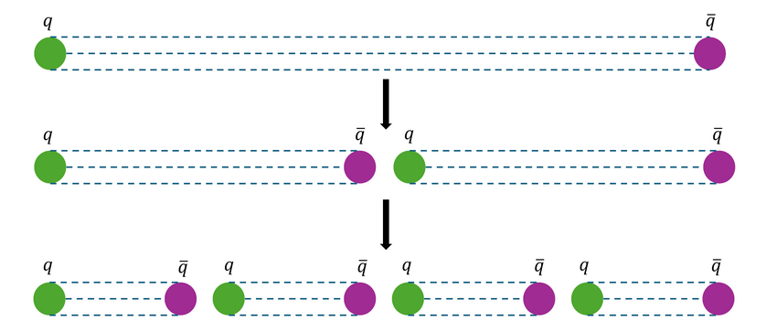
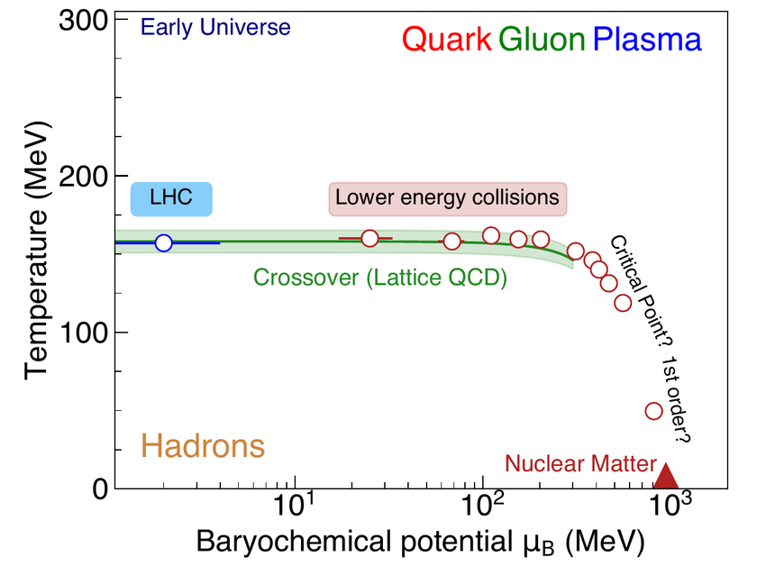
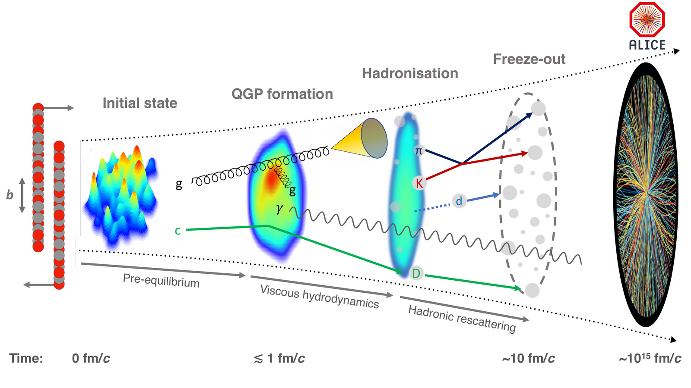
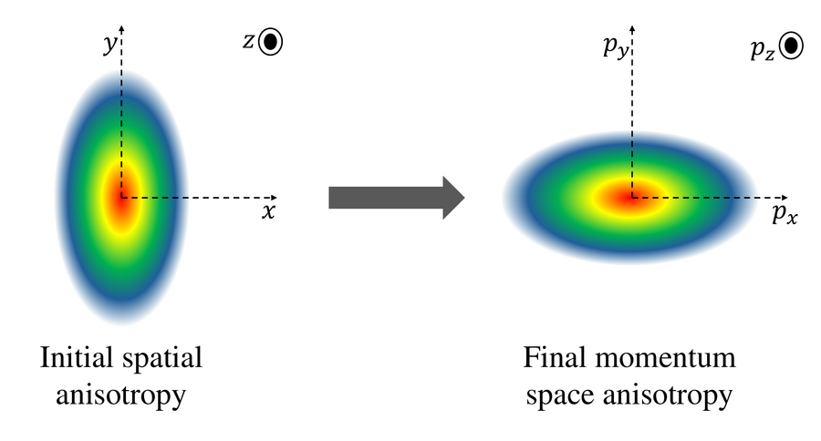
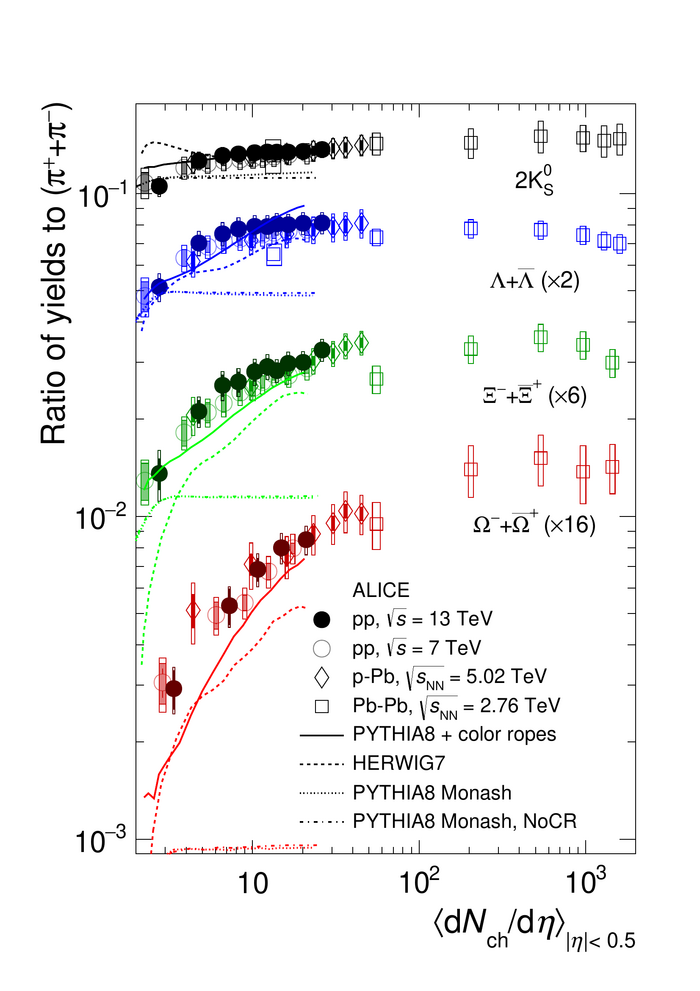
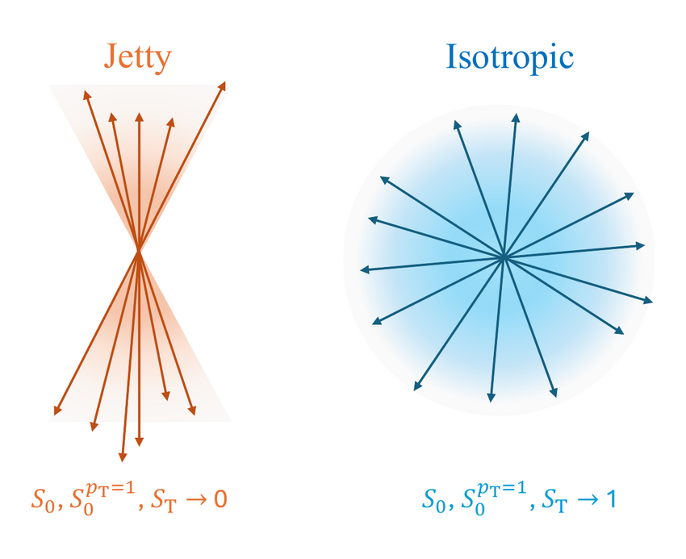
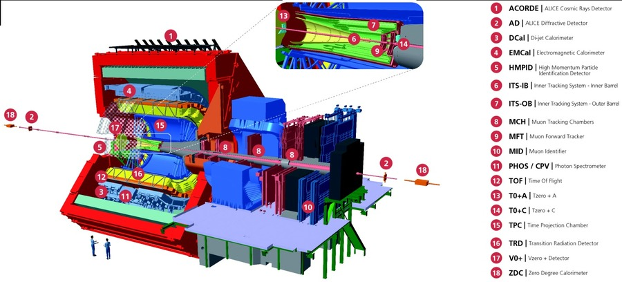
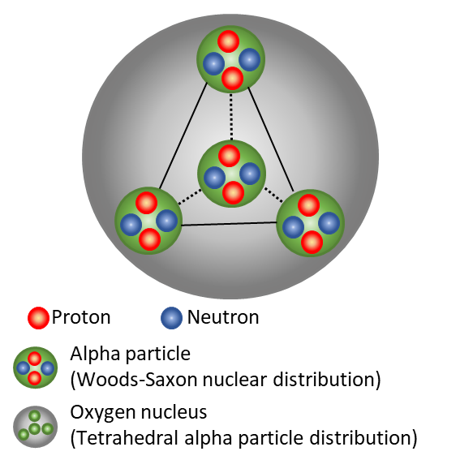
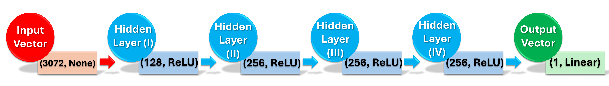
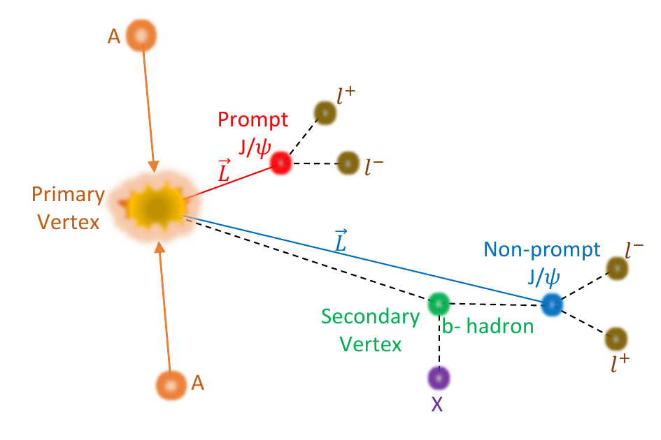

Investigating the fundamental building blocks of matter, emergent collective phenomena, and the
primordial Quark-Gluon Plasma through high-energy collider experiments and advanced computational methods.
Fundamental QCD & QGP
1. The Big Picture: Recreating the Primordial Universe
What is the universe made of? How did it come into existence? How does matter behave under the most extreme conditions imaginable?
These fundamental questions lie at the core of my research in high-energy nuclear physics.
In our daily world, everything is built of atoms, whose nuclei consist of protons and neutrons (hadrons). Underneath, hadrons are composed of elementary particles called quarks, bound together by the exchange of gauge bosons known as gluons. The theory of this strong nuclear interaction is Quantum Chromodynamics (QCD).
Unlike electromagnetic photons, gluons carry the "color charge" of the strong force and can interact among themselves. This non-Abelian self-interaction produces color confinement: under ordinary conditions, the potential energy between two quarks grows linearly with distance ($V(r) \propto \sigma r$), forming a color flux tube or "string". Pulling quarks apart causes the string to snap into quark-antiquark pairs rather than liberating a free quark.

Figure 1: Color Confinement and String Breaking.
As two color-charged quarks separate, energy stored in the chromoelectric flux tube increases until it becomes energetically favorable to create a new quark-antiquark pair ($q\bar{q}$) from the vacuum, producing two colorless hadrons rather than isolated quarks.
Source: Adapted from J. Greensite, An Introduction to the Confinement Problem, Lect. Notes Phys. 821 (Springer, 2011).
However, QCD also exhibits asymptotic freedom: at extraordinarily high temperatures or energy densities, the strong coupling constant $\alpha_{\mathrm{s}}$ decreases. When energy densities exceed $\sim 0.5\text{ GeV/fm}^3$, hadrons melt into a deconfined, thermalised state of matter: the Quark-Gluon Plasma (QGP).
💡 Physical Intuition: What is QGP?
The Quark-Gluon Plasma filled our Universe during the first few microseconds ($\sim 10^{-6}\text{ s}$) after the Big Bang before cooling into ordinary protons and neutrons. By accelerating heavy atomic nuclei (such as Lead-208, $^{208}\text{Pb}$) to $99.9999991\%$ the speed of light at the Large Hadron Collider (CERN) and the Relativistic Heavy-Ion Collider (RHIC, BNL), we collide them to recreate temperatures exceeding $2\times 10^{12}\text{ K}$ (over $100,000$ times hotter than the solar core), producing laboratory-scale "Little Bangs".

Figure 2: The Phase Diagram of Strongly Interacting Matter.
The QCD phase diagram plotted in temperature ($T$) versus net baryon chemical potential ($\mu_{\mathrm{B}}$). Ultra-relativistic collisions at top LHC energies probe the high-temperature, nearly net-baryon-free region ($\mu_{\mathrm{B}} \approx 0$), characterized by an analytic crossover transition into the Quark-Gluon Plasma at a pseudocritical temperature $T_{\mathrm{c}} \approx 155\text{ MeV}$.
Source: Adapted from ALICE Collaboration, Eur. Phys. J. C84, 808 (2024); Lattice QCD crossover bounds from S. Borsányi et al., Nature580, 355 (2020).Collision Dynamics
2. Anatomy of a Little Bang: Evolution of a Heavy-Ion Collision
The Quark-Gluon Plasma is extremely fleeting: it exists for only about $10^{-23}$ seconds inside a microscopic volume of a few tens of femtometers ($1\text{ fm} = 10^{-15}\text{ m}$). Because it cannot be observed directly, we reconstruct its physical properties by tracking its chronological lifecycle:
Initial State & Pre-Equilibrium ($t < 1\text{ fm}/c$):
Two Lorentz-contracted nuclei collide, depositing immense energy in the overlap volume. High-momentum ($Q^2$) partons undergo initial hard scatterings, while quantum fluctuations of nucleon coordinates establish an initial geometric profile.
Quark-Gluon Plasma & Relativistic Hydrodynamics ($1 \lesssim t \lesssim 10\text{ fm}/c$):
The dense medium thermalises and expands rapidly under internal pressure gradients. Remarkably, measurements confirm the QGP behaves as an almost perfect fluid, possessing a shear viscosity-to-entropy density ratio ($\eta/s \approx 1/4\pi$) near the universal quantum lower bound.
Hadronization & Chemical Freeze-out ($T \approx 155\text{ MeV}$):
As the expanding fireball cools below $T_{\mathrm{c}}$, quarks and gluons recombine into hadrons. Inelastic scatterings cease at the chemical freeze-out temperature ($T_{\mathrm{ch}}$), fixing the relative yields of identified hadron species.
Kinetic Freeze-out & Detection ($T \approx 90\text{--}120\text{ MeV}$):
Elastic hadronic collisions terminate when the mean free path exceeds the system size. The final momentum distributions freeze, and particles stream toward the detectors.

Figure 3: Spatiotemporal Evolution of a Relativistic Heavy-Ion Collision.
Chronological stages from initial Lorentz-contracted nuclear overlap, through pre-equilibrium and relativistic hydrodynamic expansion of the Quark-Gluon Plasma, to hadronization, chemical and kinetic freeze-out, and final detector registration.
Source: ALICE Collaboration, Eur. Phys. J. C84, 808 (2024).Observables & Collectivity
3. Diagnosing the Fireball: Collective Flow & Strangeness
How do we prove that a thermalised QGP was formed? In my work, I focus on two premier experimental observables:
A. Anisotropic Flow ($v_n$): Transforming Geometry into Momentum
When two spherical nuclei collide off-center with a non-zero impact parameter ($b$), the geometric overlap zone is almond-shaped (anisotropic). This spatial anisotropy creates direction-dependent pressure gradients: the gradient is steepest along the shortest axis of the almond (in-plane direction).
Hydrodynamic expansion pushes particles outward faster along the reaction plane than perpendicular to it, translating initial spatial coordinate eccentricity ($\varepsilon_n$) into a final azimuthal momentum anisotropy of produced particles ($v_n$).
The particle azimuthal distribution is mathematically decomposed as a Fourier series:
$$
\frac{dN}{d\varphi} \propto 1 + 2\sum_{n=1}^{\infty} v_n \cos\left[n(\varphi - \Psi_n)\right]
$$
where $\varphi$ is the azimuthal emission angle, $\Psi_n$ is the $n$-th harmonic symmetry plane, and:
$v_2$ (Elliptic Flow): Quantifies the elliptic momentum asymmetry driven by the average collision almond ($\varepsilon_2$).
$v_3$ (Triangular Flow): Originates from event-by-event quantum fluctuations in initial nucleon positions ($\varepsilon_3$).
Higher Harmonics ($v_4, v_5$): Sensitive to viscous damping and non-linear mode coupling in relativistic hydrodynamics.

Figure 4: Spatial Eccentricity Mapping to Momentum Azimuthal Anisotropy.
Illustration of the collision coordinate system. Initial coordinate-space eccentricity ($\varepsilon_2$) establishes steep in-plane pressure gradients, propelling particles preferentially along the reaction plane and generating elliptic flow ($v_2$).
Source: Adapted from J.-Y. Ollitrault, Phys. Rev. D46, 229 (1992); R. Snellings, New J. Phys.13, 055008 (2011); R. Sahoo, AAPPS Bull.26, 19 (2016).
Heavy-Ion Collisions (Pb–Pb): Adjusting the impact parameter $b$ alters the geometric overlap almond from circular ($b=0$) to highly eccentric ($b=6\text{ fm}$). The resulting asymmetric pressure gradients drive hydrodynamic fluid expansion, converting spatial coordinate eccentricity $\varepsilon_2$ directly into momentum-space elliptic flow $v_2$.
B. Strangeness Enhancement: A Thermometer of Deconfinement
Everyday matter consists of up ($u$) and down ($d$) quarks. Strange quarks ($s$), possessing a current mass of $m_s \sim 95\text{ MeV}/c^2$, require substantial energy thresholds to be produced in vacuum hadronic collisions.
In a deconfined Quark-Gluon Plasma, however, the dense bath of thermal gluons rapidly creates strange quark pairs via thermal fusion ($gg \to s\bar{s}$). Consequently, the relative production rates of strange and multi-strange hadrons—$\Lambda(uds)$, $\Xi^-(dss)$, $\Omega^-(sss)$, and $K^0_{\mathrm{S}}(d\bar{s})$—normalized to non-strange pions ($\pi$), exhibit significant enhancement in heavy-ion collisions relative to elementary proton-proton collisions.

Figure 5: Strangeness Enhancement as a Function of Multiplicity.
Yield ratios of strange and multi-strange hadrons to pions ($\pi$) measured across $pp$, $p\text{--Pb}$, and $\text{Pb}\text{--Pb}$ collisions at LHC energies. Notice how the enhancement increases with the strangeness content ($\Omega > \Xi > \Lambda$), illustrating the thermal equilibration of strange quarks in high-density QCD matter.
Source: ALICE Collaboration, Nature Physics13, 535–539 (2017); Eur. Phys. J. C80, 167 (2020).The Small-Systems Puzzle
4. The "Small Systems" Puzzle at the LHC
For decades, high-energy physicists assumed that QGP formation strictly required massive collisions of heavy nuclei like Lead or Gold, whereas proton-proton ($pp$) collisions served solely as vacuum reference baselines.
However, high-luminosity LHC measurements revealed an unexpected puzzle: high-multiplicity proton-proton collisions display unmistakable heavy-ion-like collective phenomena!
Non-zero elliptic flow ($v_2$) and long-range ridge-like angular correlations in two-particle spectra.
A smooth, continuous scaling of strange hadron-to-pion ratios bridging smoothly from $pp$ to $p\text{--Pb}$ and $\text{Pb}\text{--Pb}$.
Crucially, other hallmarks of QGP—such as jet quenching and heavy-flavor suppression—remain unobserved in small systems. This leads to the central scientific question of my work:
Are we observing miniature, short-lived droplets of Quark-Gluon Plasma in proton collisions, or do these signatures arise from non-thermal microscopic mechanisms such as multi-parton interactions (MPI), color reconnection, and rope hadronization?
Collisions at colliders are conventionally binned by charged-particle multiplicity ($N_{\mathrm{ch}}$). In my research, we demonstrated that multiplicity selections suffer from substantial selection bias: high multiplicity can be triggered either by a high-density, soft thermal fireball OR by multiple violent, hard-scattering back-to-back sprays (multi-jet topologies).
To untangle these competing dynamics, I utilize Event-Shape Engineering (ESE) with topological event classifiers:
Transverse Spherocity ($S_0$)
Measures the transverse momentum distribution relative to a unit vector $\hat{n}$:
$$
S_0 = \frac{\pi^2}{4} \min_{\hat{n}} \left( \frac{\sum_i |\vec{p}_{\mathrm{T},i} \times \hat{n}|}{\sum_i p_{\mathrm{T},i}} \right)^2
$$
$S_0 \to 0$ selects jetty events (hard, back-to-back QCD dijets), whereas $S_0 \to 1$ selects isotropic events (uniform, high-entropy, thermal-like fireball emission).
A spatial grid-based classifier in $(\eta, \varphi)$ phase space. By measuring cell multiplicity variance, flattenicity isolates events driven by genuine Multi-Parton Interactions (MPI) without auto-correlation or jet biases.

Figure 6: Event Topologies in Proton-Proton Collisions.
Conceptual schematic contrasting a 'jetty' event ($S_0 \to 0$, left) dominated by hard collimated partonic scatterings with an 'isotropic' event ($S_0 \to 1$, right) where particles are emitted uniformly in azimuth, mimicking thermalized collective behavior.
Source: S. Prasad, B. Sahoo, S. Tripathy, N. Mallick, and R. Sahoo, Phys. Rev. C111, 044902 (2025); Phys. Rev. D109, 014026 (2024).Experimental Collider Analysis
6. Experimental Analysis with ALICE at CERN LHC Run 3
Alongside phenomenological modeling, my work directly investigates experimental collider data collected by the ALICE (A Large Ion Collider Experiment) detector during LHC Run 3 at a record center-of-mass energy of $\sqrt{s} = 13.6\text{ TeV}$.
My active experimental research program involves:
Neutral Strange Hadron Reconstruction ($K^0_{\mathrm{S}}$ and $\Lambda+\bar{\Lambda}$):
Isolating characteristic $V^0$ decay topologies ($K^0_{\mathrm{S}} \to \pi^+ \pi^-$ and $\Lambda \to p \pi^-$) through secondary vertex finding in the ALICE central barrel.
Flattenicity-Dependent Production in Run 3:
Measuring transverse momentum spectra and strange yield ratios as a function of $(1-\rho_{\mathrm{ch}})$ to isolate soft particle production mechanisms from hard QCD backgrounds.
Next-Generation Tracking:
Leveraging the upgraded Monolithic Active Pixel Sensor-based Inner Tracking System (ITS2) for precision secondary vertexing and the continuous-readout Time Projection Chamber (TPC) for ionization energy-loss ($dE/dx$) particle identification.

Figure 7: The ALICE Experiment at the CERN Large Hadron Collider.
Schematic layout of the ALICE detector during LHC Run 3, highlighting the central barrel tracking systems—including the upgraded Inner Tracking System (ITS2) and continuous-readout Time Projection Chamber (TPC)—enabling high-precision particle tracking and identification.
Source: ALICE Collaboration, JINST19, P05062 (2024).Nuclear Structure & α-Clustering
7. Nuclear Structure & α-Clustering in Relativistic Collisions
Can high-energy particle colliders serve as femtometer-scale microscopes to photograph the internal spatial arrangement of atomic nuclei?
For decades, standard heavy-ion models treated atomic nuclei as isotropic, structureless liquid droplets characterized by the continuous Woods-Saxon density distribution:
$$
\rho(r) = \frac{\rho_0}{1 + \exp\left[\frac{r - R_0}{a}\right]}
$$
where $R_0$ is the nuclear radius and $a$ is the surface diffuseness parameter.
However, in light self-conjugate nuclei with $A = 4n$ nucleons—such as Carbon-12 ($^{12}\text{C}$), Oxygen-16 ($^{16}\text{O}$), and Neon-20 ($^{20}\text{Ne}$)—quantum mechanical nucleon correlations favor the clustering of nucleons into tightly bound $\alpha$-particles ($^4\text{He}$ nuclei: 2 protons and 2 neutrons). In the doubly magic Oxygen-16 nucleus ($Z=8, N=8$), four $\alpha$-clusters arrange themselves into a symmetric tetrahedral geometry.

Figure 8: Tetrahedral α-Clustered Structure of the $^{16}\text{O}$ Nucleus.
Schematic representation of the Oxygen-16 nucleus modeled with four $\alpha$-particle ($^4\text{He}$) sub-clusters arranged at the vertices of a regular tetrahedron, compared to an isotropic spherical Woods-Saxon nucleon density distribution. Each $\alpha$-cluster contains two protons and two neutrons governed by internal short-range nuclear distributions.
Source: S. Prasad, N. Mallick, R. Sahoo, and G. G. Barnaföldi, Phys. Lett. B860, 139145 (2025); D. Behera, S. Prasad, N. Mallick, and R. Sahoo, Phys. Rev. D108, 054022 (2023).
Femtometer-Scale Snapshots: Probing Geometry via Anisotropic Flow
Ultra-relativistic collisions of Oxygen-16 ($^{16}\text{O}\text{--}^{16}\text{O}$) at LHC energies ($\sqrt{s_{\mathrm{NN}}} = 7\text{ TeV}$) occur within $10^{-24}$ seconds—far faster than the internal nuclear vibrational and rotational timescales. The collision effectively takes an instantaneous "snapshot" of the nuclear ground state.
In central collisions ($b \approx 0$), an ordinary spherical Woods-Saxon nucleus produces near-zero average triangularity ($\varepsilon_3 \approx 0$), with any residual asymmetry originating purely from random statistical nucleon position fluctuations. In contrast, the tetrahedral $\alpha$-structure of $^{16}\text{O}$ possesses an intrinsic 3D triangularity: when projected onto the transverse plane, the rigid orientation of the tetrahedron generates substantial triangular eccentricity ($\varepsilon_3$) and quadrangularity ($\varepsilon_4$).
Using a state-of-the-art relativistic hybrid framework (IP-Glasma + MUSIC + iSS + UrQMD), we showed that this geometric clustering produces:
A systematic enhancement of triangular flow ($v_3$) and quadrangular flow ($v_4$) in the most central collisions.
A distinctive rise in the flow ratio $v_3/v_2$ for the $0\text{--}10\%$ centrality class, providing a direct metric to distinguish clustered profiles from uniform liquid drops.
Anisotropic Flow Fluctuations: The Smoking Gun Signature
The most decisive signature of clustered nuclear geometry lies in relative anisotropic flow fluctuations:
$$
F(v_2) = \frac{\sqrt{\langle v_2^2 \rangle - \langle v_2 \rangle^2}}{\langle v_2 \rangle}
$$
In our paper published in Physics Letters B (2025), we discovered that for $\alpha$-clustered $^{16}\text{O}\text{--}^{16}\text{O}$ collisions, $F(v_2)$ is largest in the highest multiplicity events (driven by the varying random spatial orientations of the tetrahedron) and systematically decreases toward peripheral events. In stark contrast, a uniform Woods-Saxon nucleus displays the exact opposite centrality dependence! This divergence establishes flow fluctuations as an unambiguous experimental test for nuclear clustering at colliders.
⚛ Interactive 3D Nuclear Structure & Flow Simulator
ε₂ = 0.210ε₃ = 0.340θx: 20°, θy: 31°
Tetrahedral α-Clustered ¹&sup6;O: 4 compact α-particle cores ($^4\text{He}$) form a rigid tetrahedron. Drag with mouse/finger to rotate in 3D. Notice how the projected 2D transverse eccentricities ($\varepsilon_2, \varepsilon_3$) vary with orientation, driving anisotropic flow fluctuations ($F(v_2)$) in central O–O collisions (Phys. Lett. B 860, 139145).
Artificial Intelligence & Machine Learning
8. Artificial Intelligence & Machine Learning in High-Energy Physics
Modern high-energy collider experiments record billions of particle collisions, generating petabytes of raw data. Extracting delicate non-perturbative QCD signatures—such as emergent collective flow in tiny collision volumes or rare heavy-flavor hadrons—against overwhelming combinatorial backgrounds demands cutting-edge data science.
In my research program, I develop and deploy physics-informed Deep Neural Networks (DNNs), Convolutional Neural Networks (CNNs), and Gradient Boosted Decision Trees (XGBoost, LightGBM) to tackle two foundational challenges in collider physics:
A. Deep Learning Estimators for Elliptic Flow ($v_2$) & Collision Centrality
In heavy-ion collisions, the collision impact parameter ($b$) cannot be measured directly, and standard multi-particle cumulant methods ($v_n\{2\}, v_n\{4\}$) suffer from non-flow contamination (resonance decays, dijets) and statistical starvation in small or peripheral collision systems.
To overcome these fundamental limitations, we designed a Deep Multilayer Perceptron architecture trained on final-state particle hit distributions in pseudorapidity and azimuth ($d^2N/d\eta d\varphi$, mapped onto 3072 input features):

Figure 9: Deep Neural Network Architecture for Elliptic Flow ($v_2$) Estimation.
Sequential feed-forward deep neural network: Input hit layer with 3072 features, followed by four dense hidden layers (128, 256, 256, and 256 neurons) with Rectified Linear Unit (ReLU) activations, mapping non-linearly to an output scalar predicting elliptic flow $v_2$ and impact parameter $b$.
Source: N. Mallick, S. Prasad, A. N. Mishra, R. Sahoo, and G. G. Barnaföldi, Phys. Rev. D105, 114022 (2022); Phys. Rev. D107, 094001 (2023).
Our deep learning model accurately predicts the event-by-event elliptic flow coefficient $v_2$ and collision impact parameter $b$ across diverse collision energies ($\sqrt{s_{\mathrm{NN}}} = 200\text{ GeV}$ to $5.02\text{ TeV}$), while successfully resolving the mass ordering and crossing of identified hadron species ($\pi^\pm, K^\pm, p+\bar{p}$) in heavy-ion collisions.
B. Topological Disentanglement: Prompt vs. Non-prompt $J/\psi$ & Heavy Flavors
The $J/\psi$ meson—a bound state of charm and anti-charm quarks ($c\bar{c}$)—is a premier probe of Quark-Gluon Plasma formation and color screening. Experimentally, $J/\psi$ is detected through its dimuon ($\mu^+\mu^-$) or dielectron ($e^+e^-$) decay channel. However, measured inclusive yields contain two fundamentally distinct production mechanisms:
Prompt $J/\psi$: Produced directly in the initial hard partonic collision ($t \approx 0$) or from feed-down of higher excited charmonia ($\psi(2S), \chi_c$), decaying right at the Primary Vertex (PV).
Non-prompt $J/\psi$: Produced from the weak decay of long-lived beauty hadrons ($b \to J/\psi + X$). Because beauty hadrons have a mean decay length of $c\tau \approx 450\,\mu\text{m}$, they fly a measurable distance before decaying at a displaced Secondary Vertex (SV).

Figure 10: Decay Topology of Prompt vs. Non-prompt $J/\psi$ Production.
Topological schematic illustrating the separation of prompt $J/\psi \to \ell^+\ell^-$ (produced directly at the primary collision vertex) from non-prompt $J/\psi \to \ell^+\ell^-$ originating from the weak decay of a $b$-hadron at a secondary vertex displaced by decay length vector $\vec{L}$.
Source: S. Prasad, N. Mallick, and R. Sahoo, Phys. Rev. D109, 014005 (2024); R. Sahoo, K. Goswami, and S. Prasad, Phys. Rev. D113, 094025 (2026).
In our paper published in Physical Review D (2024), we demonstrated for the first time that implementing XGBoost and LightGBM classifiers trained on decay kinematics (decay length $L_{xy}$, pointing angle $\theta$, distance of closest approach DCA, invariant mass, and daughter lepton transverse momenta) achieves up to 99% prediction accuracy. This machine learning methodology isolates prompt charmonium signals without requiring aggressive kinematic cuts, preserving vital low-$p_{\mathrm{T}}$ physics.
⚛ Interactive ML Classifier: Prompt vs. Non-prompt $J/\psi$
ML Decision: Non-prompt J/ψ (93% confidence). The significant decay flight distance (540μm) and displaced track DCA (160μm) indicate origin from a long-lived beauty hadron ($b$-hadron, $c\tau \approx 450\,\mu\text{m}$), enabling precise measurement of beauty quark production cross sections and B-hadron feed-down (Phys. Rev. D 109, 014005).
Doctoral Dissertation
9. Doctoral Dissertation: Strangeness & Collectivity via Event-Shape Engineering
The core foundations of my work on event topology, anisotropic flow, and strangeness enhancement were developed during my doctoral research at the Indian Institute of Technology Indore under the supervision of Prof. Raghunath Sahoo, successfully defended on 06 October 2025.
Exploring the Strangeness Enhancement and Collectivity in pp and Pb-Pb Collisions at the LHC Using Event Shape Engineering
This dissertation establishes the rigorous framework of event-shape engineering—specifically employing transverse spherocity ($S_0$) and charged-particle flattenicity ($\rho_{\mathrm{ch}}$)—to systematically isolate soft collective Multi-Parton Interactions from hard-QCD multi-jet contamination in small systems ($pp$), while demonstrating how spherocity minimizes geometric fluctuations to isolate acoustic scaling and kinetic freeze-out dynamics in heavy-ion collisions ($\text{Pb}\text{--}\text{Pb}$).
My daily research combines large-scale data processing on worldwide computing grids (WLCG) with phenomenological simulation and machine learning architectures:
Experimental Analysis & Data Science
C++, Python, ROOT, RooFit, AliRoot/AliPhysics, O2 Framework (ALICE Run 3), TensorFlow/PyTorch, Scikit-learn, XGBoost, LightGBM, Git, Linux HPC, SLURM/PBS.